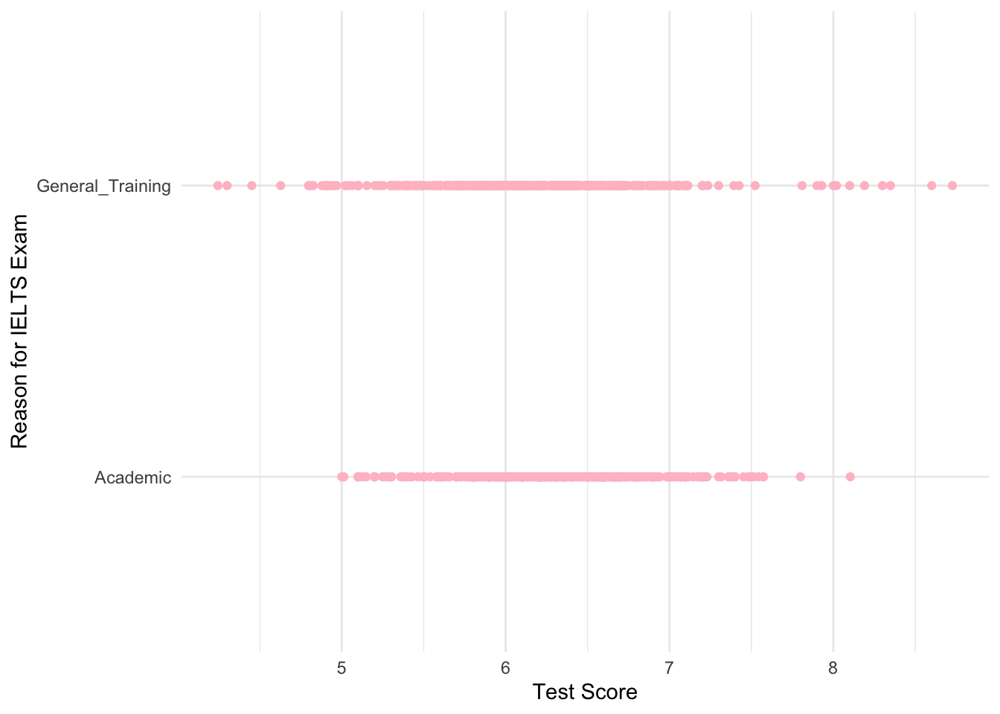

library(here)
library(gtsummary)
library(tidyverse)
library(ggplot2)
performance_by_nationality <- read_csv(here::here("performance_by_nationality.csv"))final-project
The IELTS exam consists of 4 parts: Listening, Speaking, Reading and Writing. Each part is scored from 1 to 9, then averaged for an overall score. The dataset comes from the IELTS research website and contains mean scores in various aggregations. There were 58 countries included in the data.
performance_by_nationality <- read_csv(here::here("performance_by_nationality.csv"))
tbl_summary(
performance_by_nationality,
by = year,
include = c(nationality, score, part)) |>
add_overall(last = TRUE)| Characteristic | 2022-2023 N = 3901 |
2023-2024 N = 3901 |
2024-2025 N = 4001 |
Overall N = 1,1801 |
|---|---|---|---|---|
| nationality | ||||
| Algeria | 0 (0%) | 0 (0%) | 5 (1.3%) | 5 (0.4%) |
| Argentina | 5 (1.3%) | 5 (1.3%) | 5 (1.3%) | 15 (1.3%) |
| Azerbaijan | 0 (0%) | 5 (1.3%) | 5 (1.3%) | 10 (0.8%) |
| Bangladesh | 10 (2.6%) | 10 (2.6%) | 10 (2.5%) | 30 (2.5%) |
| Bhutan | 5 (1.3%) | 0 (0%) | 0 (0%) | 5 (0.4%) |
| Brazil | 10 (2.6%) | 5 (1.3%) | 5 (1.3%) | 20 (1.7%) |
| Cambodia | 5 (1.3%) | 5 (1.3%) | 5 (1.3%) | 15 (1.3%) |
| Cameroon | 5 (1.3%) | 5 (1.3%) | 5 (1.3%) | 15 (1.3%) |
| Chile | 5 (1.3%) | 5 (1.3%) | 5 (1.3%) | 15 (1.3%) |
| China | 10 (2.6%) | 10 (2.6%) | 10 (2.5%) | 30 (2.5%) |
| Colombia | 10 (2.6%) | 10 (2.6%) | 10 (2.5%) | 30 (2.5%) |
| Egypt | 10 (2.6%) | 10 (2.6%) | 10 (2.5%) | 30 (2.5%) |
| France | 10 (2.6%) | 10 (2.6%) | 10 (2.5%) | 30 (2.5%) |
| Germany | 0 (0%) | 0 (0%) | 10 (2.5%) | 10 (0.8%) |
| Ghana | 10 (2.6%) | 10 (2.6%) | 10 (2.5%) | 30 (2.5%) |
| Hong Kong | 0 (0%) | 10 (2.6%) | 10 (2.5%) | 20 (1.7%) |
| Hong Kong, SAR of China | 10 (2.6%) | 0 (0%) | 0 (0%) | 10 (0.8%) |
| India | 10 (2.6%) | 10 (2.6%) | 10 (2.5%) | 30 (2.5%) |
| Indonesia | 10 (2.6%) | 10 (2.6%) | 10 (2.5%) | 30 (2.5%) |
| Iran | 10 (2.6%) | 0 (0%) | 0 (0%) | 10 (0.8%) |
| Iran, Islamic Republic of | 0 (0%) | 10 (2.6%) | 10 (2.5%) | 20 (1.7%) |
| Italy | 10 (2.6%) | 10 (2.6%) | 10 (2.5%) | 30 (2.5%) |
| Japan | 10 (2.6%) | 10 (2.6%) | 10 (2.5%) | 30 (2.5%) |
| Jordan | 10 (2.6%) | 5 (1.3%) | 5 (1.3%) | 20 (1.7%) |
| Kazakhstan | 5 (1.3%) | 5 (1.3%) | 5 (1.3%) | 15 (1.3%) |
| Kenya | 10 (2.6%) | 10 (2.6%) | 10 (2.5%) | 30 (2.5%) |
| Korea, Republic of | 10 (2.6%) | 10 (2.6%) | 10 (2.5%) | 30 (2.5%) |
| Kuwait | 5 (1.3%) | 5 (1.3%) | 5 (1.3%) | 15 (1.3%) |
| Lebanon | 5 (1.3%) | 5 (1.3%) | 0 (0%) | 10 (0.8%) |
| Malaysia | 10 (2.6%) | 10 (2.6%) | 10 (2.5%) | 30 (2.5%) |
| Mauritius | 5 (1.3%) | 0 (0%) | 5 (1.3%) | 10 (0.8%) |
| Mexico | 10 (2.6%) | 10 (2.6%) | 10 (2.5%) | 30 (2.5%) |
| Mongolia | 0 (0%) | 5 (1.3%) | 5 (1.3%) | 10 (0.8%) |
| Morocco | 5 (1.3%) | 5 (1.3%) | 0 (0%) | 10 (0.8%) |
| Myanmar | 5 (1.3%) | 5 (1.3%) | 5 (1.3%) | 15 (1.3%) |
| Nepal | 10 (2.6%) | 10 (2.6%) | 10 (2.5%) | 30 (2.5%) |
| Nigeria | 10 (2.6%) | 10 (2.6%) | 10 (2.5%) | 30 (2.5%) |
| Oman | 5 (1.3%) | 5 (1.3%) | 5 (1.3%) | 15 (1.3%) |
| Pakistan | 10 (2.6%) | 10 (2.6%) | 10 (2.5%) | 30 (2.5%) |
| Peru | 0 (0%) | 5 (1.3%) | 5 (1.3%) | 10 (0.8%) |
| Philippines | 10 (2.6%) | 10 (2.6%) | 10 (2.5%) | 30 (2.5%) |
| Qatar | 5 (1.3%) | 0 (0%) | 0 (0%) | 5 (0.4%) |
| Russian Federation | 10 (2.6%) | 10 (2.6%) | 10 (2.5%) | 30 (2.5%) |
| Saudi Arabia | 10 (2.6%) | 10 (2.6%) | 10 (2.5%) | 30 (2.5%) |
| South Africa | 5 (1.3%) | 5 (1.3%) | 5 (1.3%) | 15 (1.3%) |
| Spain | 10 (2.6%) | 10 (2.6%) | 10 (2.5%) | 30 (2.5%) |
| Sri Lanka | 10 (2.6%) | 10 (2.6%) | 10 (2.5%) | 30 (2.5%) |
| Taiwan | 0 (0%) | 0 (0%) | 10 (2.5%) | 10 (0.8%) |
| Thailand | 10 (2.6%) | 10 (2.6%) | 10 (2.5%) | 30 (2.5%) |
| Tunisia | 0 (0%) | 5 (1.3%) | 0 (0%) | 5 (0.4%) |
| Turkey | 10 (2.6%) | 10 (2.6%) | 10 (2.5%) | 30 (2.5%) |
| Uganda | 5 (1.3%) | 5 (1.3%) | 0 (0%) | 10 (0.8%) |
| Ukraine | 0 (0%) | 10 (2.6%) | 10 (2.5%) | 20 (1.7%) |
| United Arab Emirates | 5 (1.3%) | 5 (1.3%) | 5 (1.3%) | 15 (1.3%) |
| United States of America | 5 (1.3%) | 0 (0%) | 5 (1.3%) | 10 (0.8%) |
| Uzbekistan | 5 (1.3%) | 5 (1.3%) | 5 (1.3%) | 15 (1.3%) |
| Vietnam | 10 (2.6%) | 10 (2.6%) | 10 (2.5%) | 30 (2.5%) |
| Zimbabwe | 10 (2.6%) | 10 (2.6%) | 5 (1.3%) | 25 (2.1%) |
| score | 6.25 (5.90, 6.60) | 6.22 (5.82, 6.60) | 6.28 (5.96, 6.65) | 6.25 (5.90, 6.61) |
| part | ||||
| listening | 78 (20%) | 78 (20%) | 80 (20%) | 236 (20%) |
| overall | 78 (20%) | 78 (20%) | 80 (20%) | 236 (20%) |
| reading | 78 (20%) | 78 (20%) | 80 (20%) | 236 (20%) |
| speaking | 78 (20%) | 78 (20%) | 80 (20%) | 236 (20%) |
| writing | 78 (20%) | 78 (20%) | 80 (20%) | 236 (20%) |
| 1 n (%); Median (Q1, Q3) | ||||
ggplot(performance_by_nationality, aes(x=score, y=type)) +
geom_point(color = "pink") +
labs(
y = "Reason for IELTS Exam",
x = "Test Score"
) +
theme_minimal()
The exam has two versions: Academic and General Training. Figure 1 shows that the majority of test scores range from 5 to 7, regardless of the reason for taking the exam.
tbl_uvregression(
performance_by_nationality,
y = score,
include = c(nationality, year, part),
method = lm)
linear_model <- lm(
score ~ nationality + year + part,
data = performance_by_nationality
)| Characteristic | N | Beta | 95% CI | p-value |
|---|---|---|---|---|
| nationality | 1,180 | |||
| Algeria | — | — | ||
| Argentina | 0.43 | 0.06, 0.80 | 0.022 | |
| Azerbaijan | 0.71 | 0.32, 1.1 | <0.001 | |
| Bangladesh | -0.02 | -0.36, 0.33 | >0.9 | |
| Bhutan | 0.25 | -0.20, 0.70 | 0.3 | |
| Brazil | 0.80 | 0.44, 1.2 | <0.001 | |
| Cambodia | 0.14 | -0.23, 0.51 | 0.5 | |
| Cameroon | -0.19 | -0.55, 0.18 | 0.3 | |
| Chile | 0.17 | -0.20, 0.54 | 0.4 | |
| China | 0.26 | -0.08, 0.60 | 0.14 | |
| Colombia | 0.56 | 0.21, 0.90 | 0.002 | |
| Egypt | 0.67 | 0.33, 1.0 | <0.001 | |
| France | 1.0 | 0.67, 1.4 | <0.001 | |
| Germany | 1.5 | 1.2, 1.9 | <0.001 | |
| Ghana | 0.52 | 0.17, 0.86 | 0.003 | |
| Hong Kong | 0.79 | 0.44, 1.2 | <0.001 | |
| Hong Kong, SAR of China | 0.75 | 0.36, 1.1 | <0.001 | |
| India | 0.54 | 0.19, 0.88 | 0.002 | |
| Indonesia | 0.36 | 0.01, 0.70 | 0.043 | |
| Iran | 0.47 | 0.08, 0.86 | 0.019 | |
| Iran, Islamic Republic of | 0.50 | 0.14, 0.85 | 0.006 | |
| Italy | 0.88 | 0.53, 1.2 | <0.001 | |
| Japan | -0.03 | -0.38, 0.31 | 0.8 | |
| Jordan | 0.57 | 0.22, 0.93 | 0.002 | |
| Kazakhstan | 0.41 | 0.04, 0.78 | 0.029 | |
| Kenya | 0.69 | 0.34, 1.0 | <0.001 | |
| Korea, Republic of | 0.26 | -0.09, 0.60 | 0.14 | |
| Kuwait | -0.29 | -0.66, 0.08 | 0.12 | |
| Lebanon | 0.82 | 0.43, 1.2 | <0.001 | |
| Malaysia | 1.0 | 0.68, 1.4 | <0.001 | |
| Mauritius | 0.88 | 0.48, 1.3 | <0.001 | |
| Mexico | 0.69 | 0.34, 1.0 | <0.001 | |
| Mongolia | 0.47 | 0.08, 0.86 | 0.018 | |
| Morocco | 0.20 | -0.19, 0.59 | 0.3 | |
| Myanmar | 0.71 | 0.34, 1.1 | <0.001 | |
| Nepal | 0.14 | -0.21, 0.48 | 0.4 | |
| Nigeria | 0.74 | 0.40, 1.1 | <0.001 | |
| Oman | -0.47 | -0.84, -0.11 | 0.011 | |
| Pakistan | 0.21 | -0.14, 0.55 | 0.2 | |
| Peru | 0.19 | -0.20, 0.58 | 0.4 | |
| Philippines | 0.45 | 0.10, 0.79 | 0.011 | |
| Qatar | -0.33 | -0.78, 0.12 | 0.15 | |
| Russian Federation | 1.0 | 0.66, 1.3 | <0.001 | |
| Saudi Arabia | -0.45 | -0.79, -0.10 | 0.011 | |
| South Africa | 1.2 | 0.81, 1.5 | <0.001 | |
| Spain | 0.90 | 0.56, 1.2 | <0.001 | |
| Sri Lanka | 0.31 | -0.04, 0.65 | 0.079 | |
| Taiwan | 0.38 | -0.01, 0.77 | 0.054 | |
| Thailand | -0.15 | -0.50, 0.19 | 0.4 | |
| Tunisia | -0.07 | -0.52, 0.38 | 0.8 | |
| Turkey | 0.34 | -0.01, 0.68 | 0.054 | |
| Uganda | 0.04 | -0.35, 0.43 | 0.9 | |
| Ukraine | 0.71 | 0.35, 1.1 | <0.001 | |
| United Arab Emirates | -0.39 | -0.76, -0.02 | 0.037 | |
| United States of America | 2.3 | 1.9, 2.7 | <0.001 | |
| Uzbekistan | 0.09 | -0.28, 0.46 | 0.6 | |
| Vietnam | 0.12 | -0.22, 0.47 | 0.5 | |
| Zimbabwe | 0.63 | 0.28, 0.98 | <0.001 | |
| year | 1,180 | |||
| 2022-2023 | — | — | ||
| 2023-2024 | -0.06 | -0.14, 0.02 | 0.12 | |
| 2024-2025 | 0.05 | -0.03, 0.13 | 0.2 | |
| part | 1,180 | |||
| listening | — | — | ||
| overall | -0.06 | -0.16, 0.03 | 0.2 | |
| reading | -0.10 | -0.20, 0.00 | 0.046 | |
| speaking | -0.02 | -0.12, 0.08 | 0.7 | |
| writing | -0.38 | -0.48, -0.28 | <0.001 | |
| Abbreviation: CI = Confidence Interval | ||||
Table 2 suggests that, without adjusting, the test-taker’s nationality, the year the exam was taken, and the part of the exam are each individually associated with score.